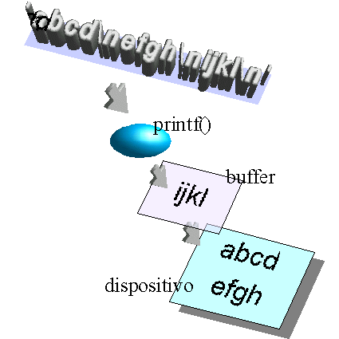

El concepto de entrada/salida en C replica el de su ambiente nativo, el sistema operativo UNIX, donde todos los archivos son vistos como una sucesión de bytes, prescindiendo completamente de su contenido, organización o forma de acceso. Además, en UNIX los dispositivos de entrada o salida llevan asociados archivos lógicos, que son puntos de entrada implementados en software a dichos dispositivos. Toda la comunicación entre un programa y el mundo externo, ya sean archivos físicos o lógicos, se hace mediante las mismas funciones.
Lo anterior da como resultado que la abstracción de programación para los archivos en C es simplemente un flujo de bytes o stream, que se maneja con operaciones primitivas independientemente de cuál sea su origen y su destino.
Si bien el C no contiene palabras reservadas de entrada/salida (E/S), la biblioteca standard sí provee un rico conjunto de funciones de E/S, tan amplio que suele provocar confusión en quienes se aproximan por primera vez al lenguaje. Ofreceremos primeramente un resumen de las funciones de E/S standard y nos concentraremos luego en la E/S sobre archivos. Aunque la información dada aquí es suficiente para intentar la creación de programas simples, la E/S es un tema notablemente complejo, y es aconsejable tener a mano el manual de las funciones C de su sistema.
Para orientación del lector agregamos un mapa de la lección presente.
|
Funciones de entrada/salida |
|||
|---|---|---|---|
|
E/S standard de caracteres de líneas con formato sobre strings |
Sobre archivos |
||
|
ANSI C de caracteres de líneas con formato |
De acceso directo |
POSIX |
|
Los programas C reciben tres canales de comunicación con el ambiente abiertos antes de comenzar su ejecución. El uso típico de estos canales de comunicación es la lectura del teclado y la impresión sobre pantalla, aunque si el sistema operativo lo soporta, también posibilitan la poderosa técnica de la redirección. La biblioteca standard provee funciones mínimas para estos usos, quedando fuera de consideración algunas características indispensables en programas de producción, como seguridad, validación, o la posibilidad de organizar la salida en pantalla. Por ejemplo, no hay una forma canónica de borrar la pantalla en C, ya que ésta es una función que depende fuertemente de la plataforma donde se ejecute el programa. Las características faltantes en la E/S standard se compensan recurriendo a bibliotecas de terceras partes.
Las funciones de E/S standard de caracteres son getchar() y putchar(). El ejemplo siguiente es un programa que copia la entrada en la salida carácter a carácter. Puede usarse, con redirección, para crear o copiar archivos, como un clon del comando cat de UNIX.
#include <stdio.h>
main()
{
int a;
while((a = getchar()) != EOF)
putchar(a);
}
Las funciones gets() y puts() leen de teclado e imprimen, respectivamente, líneas de caracteres terminadas por la señal de fin de línea \n. La función gets() debe recibir como argumento la dirección de un buffer o zona de memoria donde depositar los caracteres provenientes de entrada standard. Estos son normalmente tipeados por el usuario, pero pueden provenir de archivos o ser resultado de la ejecución -eventualmente concurrente- de otros programas, gracias a la redirección. Es un error muy frecuente ofrecer a gets() un puntero no inicializado. La función gets() se ha descripto en la unidad sobre apuntadores y direcciones.
El mismo programa, pero orientado a copiar un stream de texto línea por línea. La constante BUFSIZ está definida en stdio.h y es el tamaño del buffer de estas funciones. Se puede sugerir esta elección para el buffer del programa, salvo que haya motivos para proporcionar otro tamaño.
#include <stdio.h>
main()
{
char area[BUFSIZ];
while(gets(area) != NULL)
puts(area);
}
La función gets() elimina el \n final con que termina la línea antes de almacenarla en su buffer. La función puts() lo repone.
Hay que subrayar que, como el tamaño del buffer no es argumento para la función gets(), ésta no conoce los límites del área de memoria de que dispone para dejar los resultados de una operación de entrada, y por lo tanto no puede hacer verificación en tiempo de ejecución. Podría ocurrir que una línea de entrada superara el tamaño del buffer: entonces esta entrada corromperá algún otro contenido del espacio del programa. Esta condición se conoce como buffer overflow y el comportamiento en este caso queda indefinido, dando lugar, inclusive, a problemas de seguridad. Por este motivo gets() no es utilizada en programas de producción.
Las funciones printf() y scanf() permiten imprimir e ingresar, respectivamente, conjuntos de datos en formato legible, descriptos por cadenas de formato. Las cadenas se componen de especificaciones de conversión y son simétricamente las mismas para ambas funciones. La función printf() y las cadenas de formato han sido descriptas en la unidad correspondiente a tipos de datos.
Inversamente a printf(), la función scanf() buscará en la entrada standard patrones de acuerdo a las especificaciones de conversión. Generará representaciones internas para los datos leídos y los almacenará en variables. Para esto debe recibir las direcciones de dichas variables donde almacenar los elementos detectados en la entrada standard. Es un error frecuente ofrecerle, como argumentos, las variables, y no las referencias a las mismas.
main()
{
int a, long b;
if(scanf("%d %ld", &a, &b) != 2)
exit(1);
printf("a=%d, b=%ld\n", a, b);
}
El valor devuelto por scanf() es la cantidad de datos leídos y convertidos exitosamente, y debería siempre comprobarse que es igual a lo esperado.
El uso de scanf() es generalmente problemático. La función scanf() consumirá toda la entrada posible, pero se detendrá al encontrar un error (una entrada que no corresponda a lo descripto por la especificación de conversión) y dejará el resto de la entrada sin procesar, en el buffer de entrada. Si luego otra función de entrada intenta leer, se encontrará con esta entrada no consumida, lo cual puede dar origen a problemas de ejecución difíciles de diagnosticar. El error parecerá producirse en una instrucción posterior a la invocación de scanf() culpable. Por esta razón suele ser difícil mezclar el uso de scanf() con otras funciones de entrada/salida. Además, no hay manera directa de validar que la entrada quede en el rango del tipo de datos destino.
El uso más recomendable de scanf() es cuando se la utiliza para leer, mediante redirección, un flujo generado automáticamente por otro programa (y que, por lo tanto, tiene una gramática rigurosa y conocida).
La misma lógica de las funciones de E/S con formato sirve para que otras funciones lean variables con formato de un string, o impriman variables formateadas sobre una cadena. El efecto de sprintf() sobre su cadena argumento es el mismo que tendría printf() sobre salida standard. Por su parte sscanf() lee de un string en memoria, conteniendo datos en formato legible, y los recoge en representación binaria en variables, lo mismo que si scanf() los hubiera leído de entrada standard.
main()
{
char area[1024];
int a; long b;
sprintf(area, "%d %ld\n", -6534, 1273632);
sscanf(area, "%d %ld", &a, &b);
printf("%d %ld\n", a, b);
}
El resultado debería ser:
-6534 1273632
Diferentes sistemas operativos tienen diferentes sistemas de archivos y diferentes modelos de archivos. Los sistemas de archivos son los conjuntos de funciones particulares que cada sistema ofrece para acceder a los archivos y a la estructura de directorios que soporta. Los modelos de archivos son aquellas convenciones de formato u organización que son particulares de un sistema operativo o plataforma.
Por ejemplo, tanto DOS como UNIX soportan la noción de archivo de texto, pero con algunas diferencias a nivel de modelo de archivos. En ambos, un archivo de texto es una secuencia de líneas de texto, donde cada línea es una secuencia de caracteres terminado en fin de línea; pero en DOS, la convención de fin de línea es un par de caracteres (CR,LF) (equivalentes a ASCII 13 y 10) mientras que para UNIX, un fin de línea equivale solamente a LF (ASCII 10). Además DOS soporta la noción de carácter de fin de archivo (EOF o ASCII 26) mientras que no hay tal concepto en UNIX.
Por otro lado, diferentes sistemas de archivo proveen diferentes vistas sobre diferentes implementaciones. Un sistema operativo puede soportar o no la noción de directorio, o la de links múltiples; o puede fijar determinadas condiciones sobre los nombres de archivos, todo esto en función de la organización íntima de sus estructuras de datos.
Siendo un objetivo de diseño del lenguaje C el favorecer la producción de programas portables, el C contempla la forma de resolver estos problemas de manera fácil para los programadores. Las funciones de entrada/salida sobre archivos de la biblioteca standard están divididas en dos grandes regiones: el conjunto de funciones del C standard, también llamadas funciones de entrada/salida bufferizada, definidas por ANSI, y las funciones POSIX, también llamadas funciones de entrada/salida de bajo nivel.
Las funciones ANSI C tienen el objetivo de ocultar a los programas las particularidades de la plataforma, haciéndolos plenamente portables a pesar de las diferencias conceptuales y de implementación de entrada/salida entre los diferentes sistemas operativos. Estas funciones resuelven, por ejemplo, el clásico problema de las diferentes convenciones sobre los delimitadores de un archivo de texto. Es decir, están orientadas a resolver los problemas de incompatibilidad inherentes al modelo de archivos. En cambio, el esfuerzo de estandarización de POSIX apunta a establecer (aunque no solamente en lo referente a los archivos) una interfaz uniforme entre compilador y sistema operativo, proveyendo primitivas de acceso a los archivos con un comportamiento claramente determinado, independientemente de cuál sea el sistema operativo subyacente. Así, las funciones POSIX resuelven problemas de consistencia entre diferentes sistemas de archivos.
Las funciones del ANSI C son las más comúnmente utilizadas por el programador, pero se apoyan en funcionalidad suministrada por las funciones POSIX (de nivel más bajo), que también están disponibles y son las recomendadas cuando las restricciones del problema exceden a las funciones ANSI. La característica fundamental de las funciones ANSI es la entrada/salida bufferizada. Por ejemplo, una operación de escritura solicitada por una instrucción del programa no se efectiviza inmediatamente sino que se realiza sobre un buffer intermedio, administrado por las funciones de biblioteca standard y con su política propia de flushing o descarga al dispositivo. En cambio, las funciones POSIX hacen E/S directa a los dispositivos (o al menos, al sistema de E/S del sistema operativo) y por esto son las preferidas para la programación de drivers, servidores, etc., donde la performance y otros detalles finos deban ser controlados más directamente por el programa.
|
Las funciones de entrada/salida bufferizada reciben argumentos a imprimir y los van depositando en un buffer o zona de memoria intermedia. Cuando el buffer se llena, o cuando aparece un carácter de fin de línea, el buffer se descarga al dispositivo, escribiéndose los contenidos del buffer en pantalla, disco, etc. |
 |
Las funciones ANSI realizan todas las operaciones sobre archivos por medio de una estructura o bloque de control cuyo tipo en C se llama FILE. Esta estructura está definida en el header stdio.h y contiene, entre otras cosas, punteros a buffers para escritura y lectura. La primera operación necesaria es la apertura del archivo, que construye una estructura FILE, la inicializa con valores adecuados y devuelve un apuntador a la misma. El apuntador servirá para referenciarla durante todo el trabajo con el archivo y hasta que deba ser cerrado.
En la apertura del archivo corresponde indicar el modo de acceso (la clase de operaciones que se van a a hacer sobre él). Como algunos sistemas operativos (notoriamente, el DOS) distinguen entre archivos de texto y binarios, el ANSI C provee dos formas de apertura, para indicar cómo se va a tratar el archivo. Cuando un archivo se abre en modo de texto, durante las operaciones de lectura y escritura se aplicarán las conversiones de fines de línea y de fin de archivo propias de la plataforma. Para los archivos abiertos en modo binario, no se aplicarán conversiones.
En sistemas conformes a POSIX, como UNIX, no hay realmente diferencia entre los dos modos de apertura. Si se desea especificar una apertura de archivo en modo binario (para asegurar la portabilidad) se añade una b a la especificación de modo (por ejemplo, como en "wb+").
En el cuadro siguiente se resumen las especificaciones de modos de acceso en apertura de archivos.
|
"r" |
Abre un archivo que ya existe para lectura. La lectura se realiza al inicio del archivo. |
|
"w" |
Se crea un nuevo archivo para escribir. Si el archivo existe, se inicializa y se sobreescribe. |
|
"a" |
Abre un archivo que ya existe para agregar información al final. Sólo se puede escribir a partir del final. |
|
"r+" |
Abre un archivo que ya existe para actualizarlo (tanto para lectura como para escritura). |
|
"w+" |
Crea un nuevo archivo para actualizarlo (lectura y escritura); si existe, lo sobreescribe. |
|
"a+" |
Abre un archivo para añadir información al final. Si no existe, lo crea. |
Como en la entrada/salida standard, para manejar archivos tenemos funciones para E/S de caracteres, de líneas y con formato.
Las funciones son fgetc() y fputc(). Ejemplo que copia un archivo:
#include <stdio.h>
main()
{
FILE *fp1, *fp2;
int a;
if(((fp1 = fopen("ejemplo.txt","r")) == NULL) ||
((fp2 = fopen("copia.txt","w")) == NULL))
exit(1);
while((a = fgetc(fp1)) != EOF)
fputc(a, fp2);
fclose(fp1);
fclose(fp2);
}
Hay otras funciones dentro de esta categoría, como ungetc() que devuelve un carácter al flujo de donde se leyó.
Mismo ejemplo, en base a líneas, con las funciones fgets() y fputs(). La declaración de variables FILE * y las sentencias de apertura y cierre de archivos son idénticas al caso anterior. Enunciamos solamente el lazo principal.
char area[BUFSIZ];
while(fgets(area, BUFSIZ, fp1) != NULL)
fputs(area, fp2);
Existen funciones fprintf() y fscanf(), casi idénticas a printf() y scanf(), pero donde se especifica el stream de entrada o de salida. Las funciones printf() y scanf() pueden verse como el caso particular de las primeras donde el stream es stdout o stdin, respectivamente.
#include <stdio.h>
main()
{
FILE *fp1, *fp2;
int a; long b;
if(((fp1 = fopen("ejemplo.txt","r")) == NULL) ||
((fp2 = fopen("copia.txt","w")) == NULL))
exit(1);
if(fscanf(fp1, "%d %ld", &a, &b) != 2)
exit(1);
fprintf(fp2, "%d %ld\n", a, b);
fclose(fp1);
fclose(fp2);
}
El programa del ejemplo lee dos variables de un archivo y las escribe, en el mismo formato, en un segundo archivo.
Un conjunto muy útil de funciones ANSI permite el acceso directo, aleatorio, o random, sobre archivos, saltando por encima del modelo de E/S secuencial que domina al resto de las funciones. Las funciones básicas de acceso directo son fread() y fwrite(), que leen bloques de un tamaño dado y en una cantidad dada. Son ideales para lectura y escritura directa de estructuras de datos, ya se trate de elementos individuales u organizados en arreglos. Al poder posicionarse el puntero de lectura o escritura en zonas arbitrarias de los archivos, se logra la capacidad de E/S por registros con acceso aleatorio.
struct registro {
int dato1;
long dato2;
} datos;
...
fseek(fp, 10L * sizeof(struct registro), SEEK_SET);
fread(&datos, sizeof(struct registro), 1, fp);
datos.dato1 = 1;
fseek(fp, 5L * sizeof(struct registro), SEEK_SET);
fwrite(&datos, sizeof(struct registro), 1, fp);
En el ejemplo suponemos que se han grabado en el archivo varios registros cuyo formato está representado por la estructura de la variable datos. La función fseek() posiciona el puntero de lectura en el offset 10 * sizeof(...) (que debe ser un long), significando que necesitamos acceder al registro lógico 10 del archivo. A continuación se leen tantos bytes como mide un elemento de datos. Cambiando el tercer argumento de fread() podemos leer en un solo acceso un vector completo de estas estructuras en lugar de un elemento individualmente.
Luego de cambiar un valor del registro se lo vuelve a grabar, esta vez en un offset distinto (correspondiente al registro lógico 5).
La constante SEEK_SET indica que el posicionamiento solicitado debe entenderse como absoluto a partir del principio del archivo. Otras constantes son SEEK_CUR (posicionamiento a partir del offset actual) y SEEK_END (a partir del fin del archivo). El offset proporcionado puede ser negativo.
Una restricción importante de la E/S en ANSI C es que no se pueden mezclar instrucciones de entrada y de salida sin que intervenga una operación intermedia de posicionamiento. Es decir, una sucesión de invocaciones a fwrite() puede ser seguida de uno o más fread(), pero únicamente luego de un fseek() entre ambas. La operación de posicionamiento resincroniza ambos punteros y su ausencia puede hacer que se recupere basura.
Este posicionamiento puede ser nulo, como por ejemplo en fseek(fp, 0L, SEEK_CUR) que no varía en absoluto la posición de los punteros, pero realiza la sincronización buscada.
Podemos resumir lo visto hasta aquí con los prototipos de las funciones ANSI de E/S en el cuadro siguiente.
|
|
E/S Standard |
E/S sobre archivos |
|---|---|---|
|
De caracteres |
int getchar(); int putchar(int c); |
int fgetc(FILE *stream); int fputc(int c, FILE *stream); |
|
De líneas |
char *gets(char *s); int puts(const char *s); |
char *fgets(char *s, int n, FILE *stream); int fputs(const char *s, FILE *stream); |
|
Con formato |
int printf(const char *format, ...); int scanf(const char *format, ...); |
int fprintf(FILE *stream, const char *format, ...); int fscanf(FILE *stream, const char *format, ...); |
|
Sobre strings |
int sprintf(char *s, const char *format, ...); int sscanf(char *s, const char *format, ...); |
|
|
De acceso directo |
|
size_t fread(void *ptr, size_t size, size_t nobj, FILE *stream); size_t fwrite(const void *ptr, size_t size, size_t nobj, FILE *stream); |
Las funciones POSIX son la interfaz directa del programa con las llamadas al sistema, o system calls. Las funciones POSIX que operan sobre archivos lo hacen a través de descriptores de archivos. Estos pertenecen a una tabla de archivos abiertos que tiene cada proceso o programa en ejecución y se corresponden con estructuras de datos del sistema operativo para manejar la escritura y la lectura en los archivos propiamente dichos.
La tabla de archivos abiertos de un proceso se inicia con tres archivos abiertos (correspondientes a los streams de entrada standard, salida standard y salida standard de errores) que reciben los descriptores números 0, 1 y 2 respectivamente. Los archivos que se abren subsiguientemente van ocupando el siguiente descriptor de archivo libre en esta tabla y por lo tanto reciben descriptores 3, 4, ..., etc. Cada nueva operación de apertura exitosa de un archivo devuelve un nuevo descriptor. Este número de descriptor se utiliza durante el resto de la actividad sobre el archivo.
Tanto las funciones ANSI C para archivos como las funciones POSIX de archivos manejan referencias obtenidas mediante la apertura y utilizadas durante toda la relación del programa con el archivo, pero las referencias son diferentes. La referencia al bloque de control utilizada por las funciones ANSI es de tipo FILE *, mientras que el descriptor de archivo POSIX es un int. Por este motivo no se pueden mezclar las llamadas a funciones de uno y otro grupo.
Sin embargo, sí es cierto que las estructuras de tipo FILE, referenciadas por un FILE *, como se dijo antes, se apoyan en funcionalidad aportada por funciones POSIX, y por lo tanto contienen un descriptor de archivo. Si se tiene un archivo abierto mediante una función POSIX, es posible, dado su descriptor, obtener directamente el stream bufferizado correspondiente para manipularlo con funciones ANSI. Esto se logra con la función fdopen().
Los programas que utilicen funciones POSIX deben incluir los headers de biblioteca standard unistd.h y fcntl.h.
#include <unistd.h>
#include <fcntl.h>
main()
{
char area[1024];
int fd1, fd2, bytes;
if((fd1 = open("ejemplo.txt", O_RDONLY)) < 0)
exit(1);
if((fd2 = open("copia.txt",
O_WRONLY|O_CREAT|O_TRUNC, 0660)) < 0)
exit(1);
while(bytes = read(fd1, area, sizeof(area)))
write(fd2, area, bytes);
close(fd1);
close(fd2);
}
Este programa copia dos archivos usando funciones POSIX read() y write() aplicadas a los descriptores obtenidos con open().
Abre el primer archivo en modo de sólo lectura con el flag, u opción, O_RDONLY, en tanto que necesita escribir sobre el segundo, por lo cual utiliza el flag O_WRONLY. Además, para el segundo archivo, especifica otros flags que van agregados al primero y que son O_CREAT (si no existe, se lo crea) y O_TRUNC (si ya existe, se borran todos sus contenidos).
Los flags son nombres simbólicos para constantes de bits. Todas las combinaciones de flags posibles pueden expresarse como un OR de bits. Resumimos los flags más importantes existentes para este segundo argumento de open().
|
O_RDONLY |
El archivo se abre para lectura solamente |
|
O_RDWR |
Se abre para escritura solamente |
|
O_APPEND |
El archivo puede ser leído o agregársele contenido |
|
O_CREAT |
Si el archivo no existe, se lo crea |
|
O_EXCL |
Si ya existe, se vuelve con indicación de error |
|
O_WRONLY |
Se abre para escritura solamente |
|
O_TRUNC |
Si existe se destruye antes de crearlo |
El tercer argumento de open() tiene sentido sólo al crear un archivo. Sirve para especificar los permisos con los que será creado, siempre según el concepto de UNIX de permisos de lectura, escritura y ejecución, distribuidos en clases de usuarios. Para los sistemas operativos que no cuentan con estas nociones, el tercer argumento simplemente se ignora, pero se mantiene la interfaz POSIX para asegurar la portabilidad de los programas.
Nótese que las funciones ANSI C no permiten la especificación de estos permisos de creación.
Como para los flags, hay algunas constantes de bits útiles.
|
|
Dueño |
Grupo |
Otros |
|---|---|---|---|
|
Lectura |
S_IRUSR (S_IREAD) |
S_IRGRP |
S_IROTH |
|
Escritura |
S_IWUSR (S_IWRITE) |
S_IWGRP |
S_IWOTH |
|
Ejecución |
S_IXUSR (S_IEXEC) |
S_IXGRP |
S_IXOTH |
|
Los tres permisos |
S_IRWXU |
S_IRWXG |
S_IRWXO |
int fd = open("prueba.dat", O_RDWR|O_CREAT, S_IRWXU|S_IRGRP);
Si el archivo prueba.dat no existe, se lo crea; se abre para lectura y escritura y con todos los permisos para el creador, pero sólo con permiso de lectura para el grupo del dueño. El resto de los usuarios no tiene ningún permiso sobre el archivo.
Para posicionar el puntero de lectura/escritura en un offset determinado, existe la función lseek(). El origen del desplazamiento se expresa, como en las funciones ANSI C de acceso directo, con las constantes SEEK_SET, SEEK_END y SEEK_CUR.
Repetimos el ejemplo dado para las funciones ANSI donde se lee el registro lógico número 10 y tras una modificación se lo copia en el registro lógico 5, esta vez con funciones POSIX.
lseek(fd, 10L * sizeof(struct registro), SEEK_SET);
read(fd, &datos, sizeof(struct registro));
datos.dato1 = 1;
lseek(fd, 5L * sizeof(struct registro), SEEK_SET);
write(fd, &datos, sizeof(struct registro));
1. Escribir una función que copie la entrada en la salida pero eliminando las vocales.
2. Escribir una función que reemplace los caracteres no imprimibles por caracteres punto.
3. Construir un programa que cuente la cantidad de palabras de un archivo, separadas por blancos, tabuladores o fin de línea.
4. Construir un programa que cuente la cantidad de caracteres y de líneas de un archivo.
5. Construir un programa que permita eliminar de un archivo las líneas que contengan una cadena dada.
6.. Escribir una función que reciba como argumento dos enteros y devuelva un string de formato conteniendo una máscara de formato apropiada para imprimir un número en punto flotante. Por ejemplo, si se le dan como argumentos 7 y 2, deberá devolver el string "%7.2f". Aplicar la función para imprimir números en punto flotante.
7. Escribir sobre un archivo una variable int con valor 1 y una variable long con valor 2. Hacerlo primero con funciones de E/S con formato, y luego con funciones de acceso directo. Examinar en cada caso el resultado visualizando el archivo y opcionalmente con el comando od -bc.
8. Defina una estructura básica simple para un registro, a su gusto. Puede ser un registro de información personal, bibliográfica, etc. Construya funciones para leer estos datos del teclado e imprimirlos en pantalla. Luego, usando funciones ANSI C, construya funciones para leer y escribir una de estas estructuras en un archivo, dado un número de registro lógico determinado.
9. Repita el ejercicio anterior reemplazando las funciones ANSI C por funciones POSIX.
10. Construya programas que utilicen las funciones anteriores, ANSI C o POSIX, y ofrezcan un menú de operaciones de administración: cargar un dato en el archivo, imprimir los datos contenidos en una posición determinada, listar la base generada completa, eliminar un registro, etc.
Ejercicios Adicionales
Ejercicios Avanzados